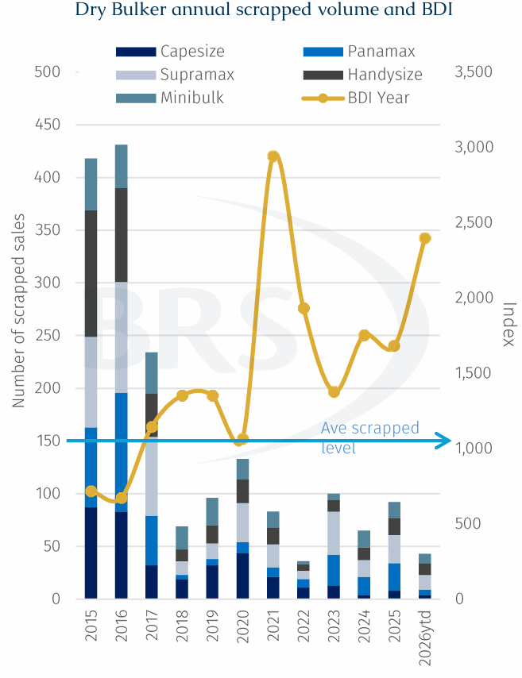
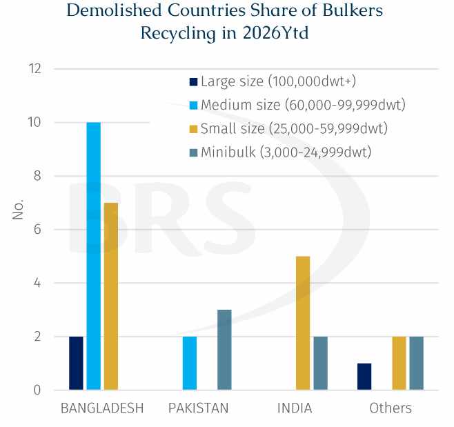

One year after the Hong Kong International Convention for the Safe and Environmentally Sound Recycling of Ships (HKC) entered into force, the widely expected wave of demolition has still not arrived. When the HKC formally took effect in June 2025, many in the market expected a visible increase in recycling volumes, supported by an ageing global fleet, tighter environmentals regulation and rising newbuilding deliveries.
In theory, all these factors should have accelerated the exit of older tonnage. However, in practice data suggests that demolition activity has remained subdued.

Why Have Dry Bulk owners Been So Reluctant to Scrap?
That the BDI remains well above its 10-year average of 1,634, is one of the most direct reasons why dry bulk owners have had little incentive to scrap. Indeed, so far in 2026, the BDI has averaged 2,399 points, the highest level since the post-pandemic period. Although volatility remains, the higher freight-rate base has already changed owners’ recycling calculations. As long as ageing bulkers can still cover operating costs and generate cash flow, owners are more likely to keep trading them than to send them for recycling immediately after the implementation of the HKC.
Take a Supramax of more than 20 years old as an example. The owner is not facing a single question of whether the vessel is compliant with HKC requirements, but a very practical economic calculation. If the vessel is sold for recycling, the owner could receive around $4.6 million in demolition proceeds. If the vessel continues trading, however, and can still find employment in regional coal, grain or minor bulk trades over the next year, its annualised operating earnings could still reach around $2.0-2.5 million based on recent comparable performance. From an asset-value perspective, the case for continued ownership is even clearer. A 25-year-old Japanese-built Supramax was recently sold to Chinese buyers for around $7.8 million, 76% above its demolition value. This shows that, for some ageing dry bulk vessels, both trading cash flow and second-hand asset value still exceed scrapped steel value. As long as the ship is still turning a profit, this outweighs the risk of waiting until later to scrap when prices may have moved lower.
Another important feature of the current dry bulk market is that older vessels still have a market. Initially, plenty had expected environmental rules such as the Energy Efficiency Existing Ship Index (EEXI) and the Carbon Intensity Indicator (CII) to accelerate the retirement of older tonnage, particularly as less efficient vessels now face speed restrictions or rating pressure. In reality, this has not happened on a meaningful scale. One reason is that EEXI is primarily a technical measure, similar to a one-off efficiency check, vessels need certification to continue operating normally. CII, by contrast, is an operational indicator. A vessel rated D for three consecutive years or E in any single year must submit a Corrective Action Plan. However, in current industry practice, the IMO has not introduced direct fines or mandatory off-hire measures for poor CII ratings.
Without immediate and material penalties, its ‘business as usual’ from an ownership standpoint. Geopolitical uncertainty has also supported the dry bulker spot market. In regional trade, especially for geared vessels, availability and flexibility can matter more than age. Against this backdrop, some medium-sized or larger vessels that would otherwise trade into the Persian Gulf may instead discharge in WC India with older tonnage then used to move cargo into the Gulf in smaller parcels and capture voyage earnings. For charterers‘ interests, vessel age is often not the first consideration; whether the ship can arrive on time, whether it has self-loading or self-discharging capability, and whether the freight rate is competitive are often more important. As long as these older vessels can still secure cargoes, environmental regulation alone is unlikely to translate into a compelling demolition decision.
Special Survey Has Not Become an Automatic Demolition
Looking at the bulkers actually recycled so far this year, scrapping candidates are still mainly those with much higher milage and limited operating value, rather than every older vessel approaching a special survey. Many of the dry bulk vessels sold for demolition were built before 2000, with an average recycling age close to 30 years. This suggests that a special survey does not automatically push the owner towards recycling. Instead, it acts as a reassessment point, forcing the owner to compare the cost of repair, survey and compliance with the potential returns from continued trading, sale or demolition.
At present, bulkers aged 20-24 years only account for around 7% of the dry bulker active fleet, and many of these vessels are gradually entering their fifth special survey window. Even so, they will not necessarily flow directly into the demolition market. For a geared-size bulker of more than 20 years old, special survey costs are typically around $300,000. This adds cost pressure, but if the vessel can still secure positive cash flow, the owner may still choose to pass the survey and continue trading. Only when survey, repair and compliance costs clearly exceed expected future earnings, or when second-hand value falls close to or below recycling value, does special survey become a genuine demolition trigger

The recycling pattern seen so far this year supports this logic. In the limited dry bulk demolition activity recorded in 2026 to date, recycling has remained concentrated in the Indian subcontinent rather than expanding globally simply because the HKC has taken effect. Bangladesh has re-established itself as the leading destination for dry bulk recycling, taking more than half of the reported bulk carrier demolition volume and showing particular strength in the 60,000-99,999 Dwt segment. Around 83% of Panamax and Post-Panamax bulkers recycled this year have gone to Bangladesh.
By comparison, India’s recycling activity has been more focused on smaller segments such as Handysize and Supramax vessels, while Pakistan has mainly remained active in smaller niches such as minibulkers. It is also worth noting that only three Capesizes have been recycled so far this year, further underlining how strong the large dry bulk segment has been and why meaningful demolition pressure has yet to emerge there.
In short, the HKC has raised the standard concerning how ships are recycled, but it has not changed the economics behind owners’ demolition decisions. It has strengthened requirements around documentation, environmental procedures and worker safety, and encouraged parts of the Sub-continent recycling industry to move towards a more formal framework. However, a vessel will only be sold for recycling when continued trading no longer makes commercial sense. Until freight earnings, second-hand values and survey costs shift decisively against older tonnage, the expected demolition wave is likely to remain delayed. Looking further ahead, stricter IMO environmental regulations could eventually become a more meaningful catalyst for ship recycling. However, given the limited progress in the IMO's net-zero discussions, such a shift still appears some way off. For now, market economics remain the dominant driver of owners' scrapping decisions.